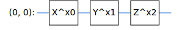
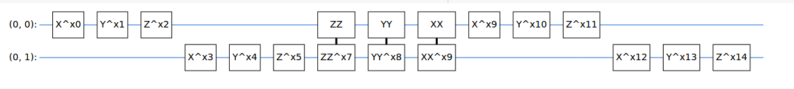
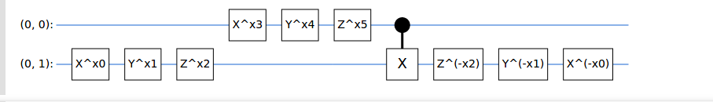
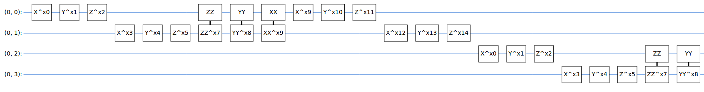
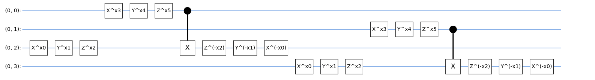

Quantum Neural Networks with Cirq and Tensorflow-Quantum
In questo esempio usiamo la Convolutional Neural Network con il quantum computing usando cirq
per creare i circuiti, sympy per inserire i simboli nel circuito e Tensorflow-Quantum per
creare il modello CNN.
Per prima cosa installiamo le librerie necessarie
!pip install cirq
!pip install tensorflow==2.1.0
!pip install tensorflow_quantum
Importiamo i moduli che poi verranno utilizzati
import tensorflow as tf
import tensorflow_quantum as tfq
import cirq
import sympy
import numpy as np
import seaborn as sns
import collections
# visualization tools
%matplotlib inline
import matplotlib.pyplot as plt
from cirq.contrib.svg import SVGCircuit
Impostiamo alcune variabili
np.random.seed(0) # Seed for NumPy random number generator
tf.random.set_seed(0) # Seed for TensorFlow random number generator
!unzip cat-and-dog.zip -d data
La prima volta carichiamo le immagini di cani e gatti. Qui saltiamo
questa parte.
import os
#carica dati images cats and dogs
.....
#creo lista Train con la lista delle immagini di cani e gatti
ed y con lista delle labels con 0 per i cani ed 1 per i gatti
Nella fase precedente abbiamo generato un array con i dati delle immagini ed un
altro con 0 che indica che si tratta di cat o 1 se dog.
Ora si definisce il CLUSTER STATE che poi verrà inserito nel modello TFQ con la funzione
tfq.layers.AddCircuit
def cluster_state_circuit(bits):
"""cluster state"""
circuit = cirq.Circuit()
circuit.append(cirq.H.on_each(bits))
for bit1, bit2in zip(bits, bits[1:] + [bits[0]]):
circuit.append(cirq.CZ(bit1, bit2))
return circuit
One qubit unitary esegue una rotazione in base al valore in sumbol sugli assi x,y, ed z
Two qubit unitary costruisce un parameterized two qubit unitary
The two_qubit_pool rappresenta un CNOT usando il one_qubit_unitary sul control e target qubits
def one_qubit_unitary(bit, symbols):
""" Cirq circuit con rotation in bloch sphere assi X,Y e Z in base a valori in symbols"""
return cirq.Circuit(
cirq.X(bit)**symbols[0],
cirq.Y(bit)**symbols[1],
cirq.Z(bit)**symbols[2])
SVGCircuit(one_qubit_unitary(cirq.GridQubit(0, 0), sympy.symbols('x0:3')))

def two_qubit_unitary(bits, symbols):
"""Cirq circuit two qubit unitary"""
circuit = cirq.Circuit()
circuit += one_qubit_unitary(bits[0], symbols[0:3])
circuit += one_qubit_unitary(bits[1], symbols[3:6])
circuit += [cirq.ZZ(*bits)**symbols[7]]
circuit += [cirq.YY(*bits)**symbols[8]]
circuit += [cirq.XX(*bits)**symbols[9]]
circuit += one_qubit_unitary(bits[0], symbols[9:12])
circuit += one_qubit_unitary(bits[1], symbols[12:])
return circuit

def two_qubit_pool(squbit, iqubit, symbols):
"""Make a Cirq circuit to do a parameterized 'pooling' operation, which
attempts to reduce entanglement down from two qubits to just one."""
pool_circuit = cirq.Circuit()
sss = one_qubit_unitary(iqubit, symbols[0:3])
ttt= one_qubit_unitary(squbit, symbols[3:6])
pool_circuit.append(sss)
pool_circuit.append(ttt)
pool_circuit.append(cirq.CNOT(control=squbit, target=iqubit))
pool_circuit.append(sss**-1)
return pool_circuit

Qui il Quantum_conv_circuit applica la convolution che prende in input n qubits e restituisce
in output n/2 qubits
def quantum_conv_circuit(bits, symbols):
"""Quantum Convolution Layer
Output a Cirq circuit two_qubit_unitary di qubits in bits"""
circuit = cirq.Circuit()
for p, q in zip(bits[0::2], bits[1::2]):
circuit += two_qubit_unitary([p, q], symbols)
for b, b2 in zip(bits[1::2], bits[2::2] + [bits[0]]):
circuit += two_qubit_unitary([b, b2], symbols)
return circuit
SVGCircuit( quantum_conv_circuit(cirq.GridQubit.rect(1, 4), sympy.symbols('x0:15')))

Ora si definisce il Quantum Pooling Circuit che prende in input n qubits(elaborati prima da quantum_conv_circuit)
e restituisce in output n/2 qubits
def quantum_pool_circuit(sb, sbs, symbols):
Quantum pool layer estrapola caratteristiche da N qubits in N/2 qubits
circuit = cirq.Circuit()
for s, s2 in zip(sb, sb2):
circuit += two_qubit_pool(s, s2, symbols)
return circuit
#Test quantum_pool_circuit
test_bits = cirq.GridQubit.rect(1, 4)
SVGCircuit(quantum_pool_circuit(test_bits[:2], test_bits[2:], sympy.symbols('x0:6')))

Creazione di sequenze alternate di convolution e pooling.
def create_model_circuit(qubits):
"""convolution and pooling
model = cirq.Circuit()
symbols = sympy.symbols('qconv0:63')
#TensorFlow Quantum
model += quantum_conv_circuit(qubits, symbols[0:15])
model += quantum_pool_circuit(qubits[:4], qubits[4:], symbols[15:21])
model += quantum_conv_circuit(qubits[4:], symbols[21:36])
model += quantum_pool_circuit(qubits[4:6], qubits[6:], symbols[36:42])
model += quantum_conv_circuit(qubits[6:], symbols[42:57])
model += quantum_pool_circuit([qubits[6]], [qubits[7]], symbols[57:63])
return model
Creazione di qubits and readout(output) in Cirq
Prendiamo l'ultimo qubits come output del modello Qconv + Qpool
cluster_state_bits = cirq.GridQubit.rect(1, 16)
readout = cirq.Z(cluster_state_bits[-1])
#definizione dell'input come stringa
input = tf.keras.Input(shape=(), dtype=tf.dtypes.string)
cluster_state = tfq.layers.AddCircuit()(
input, prepend=cluster_state_circuit(cluster_state_bits))
quantum_model = tfq.layers.PQC(create_model_circuit(cluster_state_bits),
readout)(cluster_state)
qcnn_model = tf.keras.Model(inputs=[input], outputs=[quantum_model])
#Visualizzazione del modello creato con la funzione di plot di Keras
tf.keras.utils.plot_model(qcnn_model,
show_shapes=True,
show_layer_names=False,
dpi=100)
Creazione di una funzione custom per misurare l'accuratezza del modello creato.
# Custom accuracy metric.
@tf.function
def custom_accuracy(y_true, y_pred):
y_true = tf.squeeze(y_true)
y_pred = tf.map_fn(lambda x: 1.0 if x >= 0 else -1.0, y_pred)
return tf.keras.backend.mean(tf.keras.backend.equal(y_true, y_pred))
Funzione per generare i dati che poi saranno usati in input per creare il modello.
Generazione training data,testing data e labels training e tesing
def creadati(x,y):
"""Generazione training e testing data """
qubits = cirq.GridQubit.rect(1, 16)
nr = len(x)
data = []
labels = []
for n in range(nr):
circuit = cirq.Circuit()
beta = np.ndarray.flatten(x[n])
for i,bit in enumerate(qubits):
circuit += (cirq.Circuit(cirq.rx(beta[i])(bit)))
data.append(circuit)
labels.append(1 if (y[n] == 1 ) else -1)
perc = int(len(data) * 0.8) #80% pre training e resto per testing
train_data = data[:perc]
test_data = data[perc:]
train_labels = labels[:perc]
test_labels = labels[perc:]
return tfq.convert_to_tensor(train_data), np.array(train_labels), \
tfq.convert_to_tensor(test_data), np.array(test_labels)
Creazione della lista di training_data(tm) e testing_data(teem) convertiti in tensor di TFQ e
e della lista di label training(tlm) e label testing(telm)
tm, tlm, teem, telm = creadati(
Train,yy)
Compilazione del modello con inserimento dell'optimizer e cost function
poi la creazione del modello(fit) con inserimento dei dati creati precedentemente
qcnn_model.compile(optimizer=tf.keras.optimizers.Adam(learning_rate=0.05),
loss=tf.losses.mse,
metrics=[custom_accuracy])
model = qcnn_model.fit(x=tm,
y=tlm,
batch_size=4,
epochs=5,
verbose=1,
validation_data=(teem ,telm))
Grafico per visualizzare andamento cost function
plt.plot(model.history['loss'][1:], label='Training')
plt.plot(model.history['val_loss'][1:], label='Validation')
plt.title('Training a Quantum CNN to Classification image')
plt.xlabel('Epochs')
plt.ylabel('Loss')
plt.legend()
plt.show()
Grafico per visualizzare andamento cost function
Grafico per visualizzare andamento dell'accuratezza del modello
plt.plot(model.history['custom_accuracy'][:],label='Training')
plt.plot(model.history['val_custom_accuracy'] [:],label='Testing')
plt.title('Training a Quantum CNN for Classification of image ')
plt.xlabel('Epochs')
plt.ylabel('Accuracy')
plt.legend()
plt.show()